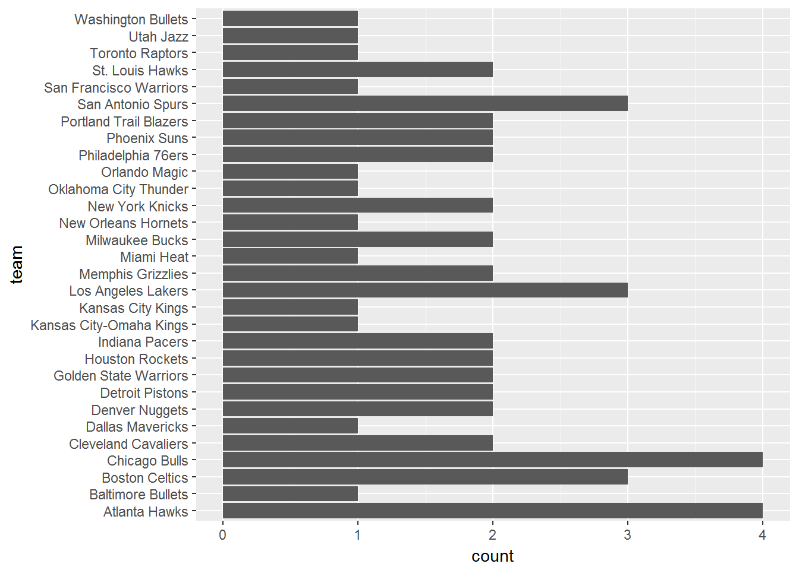

Web scraping using R is a fairly easy task. Let’s take a look at the Coach of the Year statistics from the ESPN.com site. First install the necessary packages. rvest allows you to extract data from a webpage. stringr allows you to manipulate strings. tidyr will load the data manipulation libraries that’ll be useful for selecting and munging data.
install.packages('rvest')
install.packages('stringr')
install.packages('tidyr')We add an extra library here because html_nodes() function fails when not run interactively. Load the following libraries:
library(rvest)
library(stringr)
library(tidyr)
library(methods)Read the wepage in:
url <- 'http://www.espn.com/nba/history/awards/_/id/34'
site <- read_html(url)
coach_table <- html_nodes(site, 'table')
coaches <- html_table(coach_table,fill=TRUE)[[1]]
head(coaches)## X1 X2 X3
## 1 Coach of the Year Coach of the Year Coach of the Year
## 2 YEAR COACH TEAM
## 3 2016 Steve Kerr Golden State Warriors
## 4 2015 Mike Budenholzer Atlanta Hawks
## 5 2014 Gregg Popovich San Antonio Spurs
## 6 2013 George Karl Denver Nuggets
## X4 X5 X6 X7
## 1 Coach of the Year Coach of the Year Coach of the Year Coach of the Year
## 2 W-L PLAYOFFS W-L CAREER W-L EXP
## 3 73-9 15-9 161-28 2 years
## 4 60-22 8-8 158-112 3 years
## 5 62-20 16-7 1108-490 20 years
## 6 57-25 2-4 1175-824 27 years
## X8 X9 X10
## 1 Coach of the Year Coach of the Year Coach of the Year
## 2 <NA> <NA> <NA>
## 3 <NA> <NA> <NA>
## 4 <NA> <NA> <NA>
## 5 <NA> <NA> <NA>
## 6 <NA> <NA> <NA>There are extra rows and columns we don’t need so we’ll remove them and give names to the remaining columns:
coaches <- coaches[-(1:2), -(8:10)]
names(coaches) <- c("year", "coach", "team", "season_record","playoff_record","career_record","experience")
coaches$year <- as.integer(coaches$year)
head(coaches)## year coach team season_record playoff_record
## 3 2016 Steve Kerr Golden State Warriors 73-9 15-9
## 4 2015 Mike Budenholzer Atlanta Hawks 60-22 8-8
## 5 2014 Gregg Popovich San Antonio Spurs 62-20 16-7
## 6 2013 George Karl Denver Nuggets 57-25 2-4
## 7 2012 Gregg Popovich San Antonio Spurs 50-16 10-4
## 8 2011 Tom Thibodeau Chicago Bulls 62-20 9-7
## career_record experience
## 3 161-28 2 years
## 4 158-112 3 years
## 5 1108-490 20 years
## 6 1175-824 27 years
## 7 1108-490 20 years
## 8 261-157 2 yearsWe’ll want to split up some columns and convert them to integers. Those are the season_record, playoff_record, and career_record columns:
coaches <- separate(coaches, season_record, c('season_wins', 'season_losses'), sep='-', remove=TRUE, convert=TRUE)
head(coaches)## year coach team season_wins season_losses
## 3 2016 Steve Kerr Golden State Warriors 73 9
## 4 2015 Mike Budenholzer Atlanta Hawks 60 22
## 5 2014 Gregg Popovich San Antonio Spurs 62 20
## 6 2013 George Karl Denver Nuggets 57 25
## 7 2012 Gregg Popovich San Antonio Spurs 50 16
## 8 2011 Tom Thibodeau Chicago Bulls 62 20
## playoff_record career_record experience
## 3 15-9 161-28 2 years
## 4 8-8 158-112 3 years
## 5 16-7 1108-490 20 years
## 6 2-4 1175-824 27 years
## 7 10-4 1108-490 20 years
## 8 9-7 261-157 2 yearsLet’s do the same for playoff_record and career_record variables:
coaches <- separate(coaches, playoff_record, c('playoff_wins', 'playoff_losses'), sep='-', remove=TRUE, convert=TRUE)
coaches <- separate(coaches, career_record, c('career_wins', 'career_losses'), sep='-', remove=TRUE, convert=TRUE)
head(coaches)## year coach team season_wins season_losses
## 3 2016 Steve Kerr Golden State Warriors 73 9
## 4 2015 Mike Budenholzer Atlanta Hawks 60 22
## 5 2014 Gregg Popovich San Antonio Spurs 62 20
## 6 2013 George Karl Denver Nuggets 57 25
## 7 2012 Gregg Popovich San Antonio Spurs 50 16
## 8 2011 Tom Thibodeau Chicago Bulls 62 20
## playoff_wins playoff_losses career_wins career_losses experience
## 3 15 9 161 28 2 years
## 4 8 8 158 112 3 years
## 5 16 7 1108 490 20 years
## 6 2 4 1175 824 27 years
## 7 10 4 1108 490 20 years
## 8 9 7 261 157 2 yearsFinally, remove the character years from the experience column and make it an integer. But hold on, there’s actually an easier way. We can use the extract_numeric() function (update: this function has been deprecated) to get the numbers and remove the old column:
coaches$yrs_exp <- as.integer(extract_numeric(coaches$experience))
coaches$experience <- NULL
head(coaches)## year coach team season_wins season_losses
## 3 2016 Steve Kerr Golden State Warriors 73 9
## 4 2015 Mike Budenholzer Atlanta Hawks 60 22
## 5 2014 Gregg Popovich San Antonio Spurs 62 20
## 6 2013 George Karl Denver Nuggets 57 25
## 7 2012 Gregg Popovich San Antonio Spurs 50 16
## 8 2011 Tom Thibodeau Chicago Bulls 62 20
## playoff_wins playoff_losses career_wins career_losses yrs_exp
## 3 15 9 161 28 2
## 4 8 8 158 112 3
## 5 16 7 1108 490 20
## 6 2 4 1175 824 27
## 7 10 4 1108 490 20
## 8 9 7 261 157 2There we have it! We have a tidy data frame in which we can do some analysis now! For example, we can figure out which team has the most Coach of the Years using the dplyr and ggplot2 packages:
library(dplyr)
library(ggplot2)
coaches %>% select(team) %>% ggplot(aes(team), fill=team) + geom_bar() + coord_flip()
So it looks like the Atlanta Hawks and the Chicago Bulls have had some pretty coaches throughout NBA history. There’s much more analysis that can be done with this dataset. We can ask questions like which coach has the most wins all-time? Or we can try to make interesting connections like, do years of experience correlate with more wins? But I’ll leave that to you to find out!
It’s a good idea to save your data frame to use later:
write.csv(coaches, 'coaches.csv', row.names=FALSE)There are other considerations when it comes to scraping and parsing web data like missing values. We can take a look at more of the data and notice some NA values:
head(coaches, 20)## year coach team season_wins season_losses
## 3 2016 Steve Kerr Golden State Warriors 73 9
## 4 2015 Mike Budenholzer Atlanta Hawks 60 22
## 5 2014 Gregg Popovich San Antonio Spurs 62 20
## 6 2013 George Karl Denver Nuggets 57 25
## 7 2012 Gregg Popovich San Antonio Spurs 50 16
## 8 2011 Tom Thibodeau Chicago Bulls 62 20
## 9 2010 Scott Brooks Oklahoma City Thunder 50 32
## 10 2009 Mike Brown Cleveland Cavaliers 66 16
## 11 2008 Byron Scott New Orleans Hornets 56 26
## 12 2007 Sam Mitchell Toronto Raptors 47 35
## 13 2006 Avery Johnson Dallas Mavericks 60 22
## 14 2005 Mike D'Antoni Phoenix Suns 62 20
## 15 2004 Hubie Brown Memphis Grizzlies 50 32
## 16 2003 Hubie Brown Memphis Grizzlies 28 41
## 17 NA Gregg Popovich San Antonio Spurs 60 22
## 18 2002 Rick Carlisle Detroit Pistons 50 32
## 19 2001 Larry Brown Philadelphia 76ers 56 26
## 20 2000 Doc Rivers Orlando Magic 41 41
## 21 1999 Mike Dunleavy Portland Trail Blazers 35 15
## 22 1998 Larry Bird Indiana Pacers 58 24
## playoff_wins playoff_losses career_wins career_losses yrs_exp
## 3 15 9 161 28 2
## 4 8 8 158 112 3
## 5 16 7 1108 490 20
## 6 2 4 1175 824 27
## 7 10 4 1108 490 20
## 8 9 7 261 157 2
## 9 2 4 347 220 0
## 10 10 4 347 216 0
## 11 7 5 454 647 15
## 12 2 4 185 243 6
## 13 14 9 254 186 6
## 14 9 6 472 433 12
## 15 0 4 424 489 13
## 16 NA NA 424 489 13
## 17 16 8 1108 490 20
## 18 4 6 666 489 14
## 19 12 11 1098 904 0
## 20 NA NA 770 560 17
## 21 7 6 613 716 17
## 22 10 6 147 67 3Because this is a small dataset, we could infer what those missing values could be. For example, there is a missing value in year of row 17, which is obvious it should be 2002. So we could manually impute that value.
There are NAs in the playoff_wins and playoff_losses columns. Those are a little trickier and one could possibly impute with more complex methods. But if you have some domain knowledge in sports, you know it’s possible for coaches to win Coach of the Year, but not make it to the playoffs hence the NA values under those columns. So it might be sensible to manually impute with 0 or some other value. Although that’s a whole another discussion about imputation techniques and feature engineering which I’ll try to cover in another blog post. Hope that was a quick and helpful introduction to pulling data from the web in R!